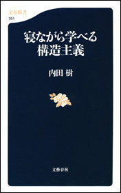
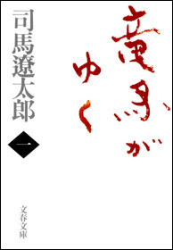

| 2016文藝春秋電子書籍ベスト100【文春e-Books】 | |
| 文藝春秋 | |
＊この電子書籍は横書きでレイアウトされています。
＊読む際のご注意、お断り等についてはこちら をお読み下さい。
はじめに
2016年も電子書籍業界にとっては変化のある1年でした。
8月にはじまった、読み放題サービス「Kindle Unlimited」は、出版社も巻き込んで、色々なハレーションを起こしました。
雑誌読み放題サービス「dマガジン」は、議論を生みながらも、成長を続けています。
電子コンテンツの"読み放題"がどういう方向に進んでいくのか、業界全体で実験と検証が続いている状況です。
文藝春秋の今年の電子書籍ランキングは、芥川賞受賞作品、本屋大賞受賞作品などが上位に並んでいます。
これらの候補作は、受賞後ではなく、候補作になるとすぐ、各出版社が電子化を進めるようになりました。
数年前では考えられない状況で、電子書籍の重要度が増したことを表す例の一つです。
文藝春秋が積極的に取り組んでいる、電子オリジナルのコンテンツ「文春e-Books」も存在感を増して来ました。
5位に『あと100円でもう一品！ 楽天レシピ 節約お料理ベスト100』、6位に『週刊文春が報じた ジャニーズ女帝メリー喜多川 怒りの独白５時間』と、2作品が初めてベスト10内に入りました。26位には、Ｄ県警シリーズの一作で、単行本・文庫本未収録の短編作品『刑事の勲章』（横山秀夫）、59位には話題の人工知能について２人が語った『羽生善治×川上量生「羽生さんはコンピュータに勝てますか？」完全版』がランクインしています。
これらは、電子書籍特有の、スピード感と、手軽さを武器にした作品です。
また、村上春樹さん、池井戸潤さん、横山秀夫さんといったベストセラー作家と一緒に、没後20年となった司馬 太郎作品が複数ランクインしているところに、電子書籍の読者層の広がりを感じることができます。
太郎作品が複数ランクインしているところに、電子書籍の読者層の広がりを感じることができます。
とはいえ、電子書籍に関する取材を受けると、「電子書籍のことよく分からないのですが」「電子書籍を買ったことがないのですが」という言葉からはじまることが多いのも実情です。
まだまだ、電子書籍の認知度は低いと思っています。さらに身近な存在として電子書籍を感じていただけるように、電子書籍編集部はこれからも進んでいきたいと考えています。
2016年12月１日 文藝春秋電子書籍編集部
注意事項
●このランキングは2016年１年間の、全電子書店の電子書籍売上を集計したものが基にになっています
●『６４』『坂の上の雲』など複数巻がランキングに入っている場合、１冊のみを表示しています
● のアイコンをクリックすると、その書籍の商品詳細頁に飛びます
のアイコンをクリックすると、その書籍の商品詳細頁に飛びます
2016 文藝春秋 電子書籍ベスト100
2016 Bungeishunju e-books Best 100
1
 コンビニ人間
コンビニ人間
 村田沙耶香
村田沙耶香
配信開始日 2016/07/27

第155回(2016年上半期)芥川賞受賞作
36歳未婚女性、古倉恵子。
大学卒業後も就職せず、コンビニのバイトは18年目。
これまで彼氏なし。
オープン当初からスマイルマート日色駅前店で働き続け、変わりゆくメンバーを見送りながら、店長は8人目だ。
日々食べるのはコンビニ食、夢の中でもコンビニのレジを打ち、清潔なコンビニの風景と「いらっしゃいませ！」の掛け声が、毎日の安らかな眠りをもたらしてくれる。
仕事も家庭もある同窓生たちからどんなに不思議がられても、完璧なマニュアルの存在するコンビニこそが、私を世界の正常な「部品」にしてくれる──。
ある日、婚活目的の新入り男性、白羽がやってきて、そんなコンビニ的生き方は「恥ずかしくないのか」とつきつけられるが......。
現代の実存を問い、正常と異常の境目がゆらぐ衝撃のリアリズム小説。
2
火花
又吉直樹
配信開始日 2015/06/11
第153回（2015年上半期）芥川賞受賞作
笑いとは何か、人間とは何かを描ききったデビュー小説
売れない芸人徳永は、師として仰ぐべき先輩神谷に出会った。そのお笑い哲学に心酔しつつ別の道を歩む徳永。二人の運命は。
3
羊と鋼の森
宮下奈都
配信開始日 2015/10/02
2016年本屋大賞 大賞受賞作
ゆるされている。世界と調和している。
それがどんなに素晴らしいことか。
言葉で伝えきれないなら、音で表せるようになればいい。
「才能があるから生きていくんじゃない。そんなもの、あったって、なくたって、生きていくんだ。あるのかないのかわからない、そんなものにふりまわされるのはごめんだ。もっと確かなものを、この手で探り当てていくしかない。（本文より）」
ピアノの調律に魅せられた一人の青年。
彼が調律師として、人として成長する姿を温かく静謐な筆致で綴った、祝福に満ちた長編小説。
4
この社会で戦う君に「知の世界地図」をあげよう 池上彰教授の東工大講義
池上 彰

配信開始日 2015/03/13
東京工業大学の教授に就任した池上彰さん。理系学生への講義の内容が一冊に。「悪い会社・優れた経営者の見分け方」「なぜ優秀な理系学生がオウム真理教に？」「君ならサムスンに移籍するか？」「日本国憲法は改正すべきか」「リーマン・ショックとは何だったのか」「君は年金に入るべきか」「なぜ反日運動が起きるのか」etc.知るべきことを分かりやすく。ビジネスマンも必読です。
5
あと100円でもう一品！ 楽天レシピ 節約お料理ベスト100【文春e-Books】
文藝春秋・編
配信開始日 2015/11/27
「楽天レシピ」に投稿された98万レシピの中から、材料費100円以下の節約料理に注目！ サイトでは見ることのできない利用者の「お気に入り登録数」をもとに、本当に役に立つレシピ100品をセレクトしました。お得で、おいしく、しかもカンタンなレシピが揃っています。
ひき肉、おとうふ、もやし、キャベツなど、材料別にレシピを選ぶこともできるので、あまった食材や、スーパーの特売品をみてから、今晩の一品を決めることも。あと100円で食卓をにぎやかにできます！
6
週刊文春が報じた ジャニーズ女帝メリー喜多川 怒りの独白５時間【文春e-Books】
週刊文春編集部・編
配信開始日 2016/01/15
SMAP分裂騒動のすべては週刊文春のスクープから始まった！
突如、浮上した人気アイドルグループSMAPの分裂問題。ジャニーズ事務所も、「一部メンバーの独立問題」などが生じていることを公式に認めた。
多くのメディアが指摘しているように、全ての発端は2015年１月に週刊文春が掲載したジャニーズ事務所の副社長メリー喜多川氏の独占インタビューだった。
５時間にもおよんだ取材の途中、メリー氏はSMAPの担当マネージャーを取材現場に呼び出して、叱責した。
緊張感あふれる両者のやり取りを、こと細かく報じたこの記事は、芸能関係者はもちろんのこと、SMAPメンバーにも衝撃を与えたという。
今回の騒動の背景には何があるのか。
その鍵となる記事を、電子書籍で一挙公開。
※この電子書籍は、週刊文春2015年1月29日号に掲載された「ジャニーズ女帝メリー喜多川 怒りの告白５時間」の記事を電子書籍化したものです
7
64（ロクヨン）（上）
横山秀夫
配信開始日 2015/02/06
警察職員二十六万人、それぞれに持ち場がある。刑事など一握り。大半は光の当たらない縁の下の仕事。神の手は持っていない。それでも誇りは持っている。一人ひとりが日々矜持をもって職務を果たさねば、こんなにも巨大な組織が回っていくはずがない。D県警は最大の危機に瀕する。警察小説の真髄が、人生の本質が、ここにある。
英国推理作家協会翻訳部門（インターナショナル・ダガー賞）2016年の最終候補作。日本人の作品が最終候補に残るのは翻訳部門が独立して設けられた2006年以降で初めての快挙。
8
色彩を持たない多崎つくると、彼の巡礼の年
村上春樹
配信開始日 2015/12/04
多崎つくる、鉄道の駅をつくるのが仕事。名古屋での高校時代、四人の男女の親友と完璧な調和を成す関係を結んでいたが、大学時代のある日突然、四人から絶縁を申し渡された。
何の理由も告げられずに──。
死の淵を一時さ迷い、漂うように生きてきたつくるは、新しい年上の恋人・沙羅に促され、あの時なにが起きたのか探り始めるのだった。全米第一位にも輝いたベストセラー！
9
「ない仕事」の作り方
みうらじゅん
配信開始日 2015/12/11
デビューして今年で35年、「仏像ブーム」を牽引してきた第一人者であり、「マイブーム」や「ゆるキャラ」の名付け親としても知られるみうらじゅん。とはいえ、「テレビや雑誌で、そのサングラス&長髪姿を見かけるけれど、何が本業なのかわからない」「どうやって食っているんだろう？」と不思議に思っている人も多いのでは？
本書では、それまで世の中に「なかった仕事」を、企画、営業、接待も全部自分でやる「一人電通」という手法で作ってきた「みうらじゅんの仕事術」を、アイデアの閃き方から印象に残るネーミングのコツ、世の中に広める方法まで、過去の作品を例にあげながら丁寧に解説していきます。
「好きなことを仕事にしたい」、「会社という組織の中にいながらも、新しい何かを作り出したい」と願っている人たちに贈る、これまでに「ない」ビジネス書（？）です。
10
後妻業
黒川博行
配信開始日 2016/06/10
小説が現実を凌駕した話題作！
91歳の耕造は妻に先立たれ、69歳の小夜子を後妻に迎えていた。ある日耕造が倒れ、小夜子は結婚相談所の柏木と結託して早々に耕造の預金を引き出す。さらに公正証書遺言を盾に、遺産のほぼすべてを相続すると耕造の娘たちに宣言した──。高齢の資産家男性を狙う＜後妻業＞を描き、世間を震撼させた超問題作。
2016年、「後妻業の女」（主演・大竹しのぶ、豊川悦司）として映画化され大ヒット。
11
この日本で生きる君が知っておくべき「戦後史の学び方」 池上彰教授の東工大講義 日本篇
池上 彰
配信開始日 2015/07/10
敗戦から高度成長に至ったわけ、学校では教えない「日教組」、アベノミクスとバブルの教訓まで。池上彰教授のわかりやすい戦後史講義を実況中継！
歴史の授業ではなおざりにされがちな「日本の戦後史」ですが、社会に出るとこれほど「使える」分野はありません。そこで、池上彰教授の東工大講義シリーズ第２弾は、『この日本で生きる君が知っておくべき「戦後史の学び方」』。平成生まれの学生たちに、日本が敗戦から不死鳥のように甦った道筋から、現在の問題を解くヒントを教えます。「アベノミクスはバブルから学べるか？」「政権交代の不思議な歴史」「学校では絶対に教えない『日教組』」など、ビジネスパーソンにも参考になることばかり。
12
学校では教えない「社会人のための現代史」 池上彰教授の東工大講義 国際篇
池上 彰
配信開始日 2015/11/13
冷戦後の15年を知れば、混迷の現代が見える！
EUの挫折、イスラム国の登場、エネルギー戦争、反日の原点──すべて東西冷戦後に原点が。ビジネスにも投資にも現代史は必須です！
13
世界を変えた10冊の本
池上 彰
配信開始日 2014/03/14
『聖書』の基礎を知ることで見えてくる歴史の流れとは？ 革命の原動力となった『資本論』の論理とは？ 『コーラン』『種の起源』『アンネの日記』あるいはケインズ、フリードマンの経済書まで、世界に大きな影響を与えた10冊の本を池上さんが厳選、その内容をわかりやすく紹介するとともに、歴史的意義を解き明かします。私たちが生きる現代を形作っている思想や、日々メディアで報じられている国際問題の源泉がこの1冊でわかる！
14
世紀の空売り 世界経済の破綻に賭けた男たち
マイケル・ルイス／東江一紀・訳

配信開始日 2016/01/15
2016年3月公開 映画『マネー・ショート 華麗なる大逆転』原作
世界中が、アメリカ発の住宅好況に酔っていた2000年代半ば、そのまやかしを見抜き、世界経済が破綻する方に賭けた男達がいた。投資銀行、格付機関、米政府の裏をかき、彼らはいかに世紀の空売りと呼ばれる大相場をはったのか。『マネー・ボール』の著者マイケル・ルイスが世界同時金融危機の実相を描く痛快ノンフィクション。解説・藤沢数希
電子書籍では、マイケル・ルイス氏が映画化の経緯や、その見所について述べた「映画化記念 著者特別エッセイ」を収録。
15
カルト村で生まれました。
高田かや
配信開始日 2016/02/12
「平成の話とは思えない！」「こんな村があるなんて！」と、WEB連載時から大反響!!
「所有のない社会」を目指す「カルト村」で生まれ、19歳のときに自分の意志で村を出た著者が、両親と離され、労働、空腹、体罰が当たり前の暮らしを送っていた少女時代を回想して描いた「実録コミックエッセイ」。
〈カルト村ってどんなとこ？〉
●大人と子供の生活空間が別々
●朝5時半起床で労働
●布団は2人で1組
●食事は昼と夜のみ
●卵ミルクを飲ませられる
●お小遣いはもらえない
●すべてのモノが共有で、服もお下がり
●男子は丸刈り、女子はショートカット
●ビンタ、正座、食事抜きなど体罰は当たり前
●手紙は検閲される
●テレビは「日本昔ばなし」のみ
●漫画は禁止、ペットも飼えない
●自然はいっぱい。探険など外遊びは楽しい♪
16
日本のいちばん長い日（決定版） 運命の八月十五日
半藤一利

配信開始日 2001/07/20
近代日本の"運命の一日"を描いた不朽の名作。
太平洋戦争を終結させるべく、天皇の「聖断」に従い和平への努力を続ける首相鈴木貫太郎をはじめとする人々と、徹底抗戦を主張して蹶起せんとした青年将校たち──。玉音放送を敢行しようとする政府関係者に対して、陸軍の一部軍人は近衛連隊を率いて皇居に乱入した。そのあまりにも対照的な動きこそ、この一日の長さを象徴するものであった。
玉音放送が流れた昭和二十年八月十五日正午に至る一昼夜に繰り広げられた二十四幕の人間ドラマ。
1967年岡本喜八監督による映画化につづき、戦後七十年の2015年に再度映画化。出演 役所広司、本木雅弘、松坂桃李、堤真一、山崎努／監督 原田眞人
17
イニシエーション・ラブ
乾 くるみ
配信開始日 2007/09/20
「必ず二回読みたくなる」と絶賛された傑作ミステリー。僕がマユに出会ったのは、人数が足りないからと呼びだされた合コンの席。理系学生の僕と、歯科衛生士の彼女。夏の海へのドライブ。ややオクテで真面目な僕らは、やがて恋に落ちて......。甘美で、ときにほろ苦い青春のひとときを瑞々しい筆致で描いた青春小説──と思いきや、最後から二つめのセリフ（絶対に先に読まないで！）で、本書はまったく違った物語に変貌してしまう。
2015年映画化。主演 松田翔太、前田敦子、木村文乃／監督 堤幸彦
18
大世界史 現代を生きぬく最強の教科書
池上 彰／佐藤 優
配信開始日 2015/11/06
『新・戦争論──僕らのインテリジェンスの磨き方』に続く、最強コンビによる第２弾！
いま世界は激動の時代を迎え、これまでの秩序が揺れ動いています。こうした混迷の時代こそ歴史を学ばなければいけません。現在の世界の動きをとらえ、各地で起きている事態を読み解くためには、その背景を知ることが必要なのです。高校時代、世界史が苦手だったという著者の一人、池上彰さんは、「歴史」を知るとは、生きていくために「自分」を知ることだと、いま感じているといいます。
もう一人の筆者、佐藤優さんは、歴史を学ぶことは、主婦やビジネスパーソンにも意味がある、といいます。歴史を学ぶことで、自分では実際に経験できないことを代理経験することは、組織の理不尽さに直面したときにものをいうというのです。歴史を学ばない人は、どんな成功者やエリートであっても意外に脆いものだとか。
中東、トルコ、中国、沖縄、ロシア、アメリカ、ドイツ......大きな節目にある「世界の今」を、「大世界史」でとらえなおし、そこからビリギャルの世界史的意義や日本の教育問題までの議論を収録した一冊。現代を生き抜くためには必要な知識をもたらす最強の教科書です。「最強の世界史勉強法」も巻末についています。
19
民王
池井戸 潤
配信開始日 2014/08/01
夢かうつつか、新手のテロか？ 総理と息子の非常事態が発生。「お前ら、そんな仕事して恥ずかしいと思わないのか。目をさましやがれ！」漢字の読めない政治家、酔っぱらい大臣、揚げ足取りのマスコミ、バカ大学生が入り乱れ、巨大な陰謀をめぐる痛快劇の幕が切って落とされた。総理の父とドラ息子が見つけた真実のカケラとは!? 謎が謎をよぶ、痛快政治エンタメ！
2015年に父・遠藤憲一、息子・菅田将暉でドラマ化。
20
侠飯
福澤徹三
配信開始日 2015/02/13
グルメ×任侠!! 書き下ろし小説！
就職活動中の大学生が暮らす６畳のワンルームに転がり込んできたヤクザは、妙に「食」にウルサイ男だった！ 異色グルメ小説。
2016年に生瀬勝久、柄本時生でドラマ化。
21
オレたちバブル入行組
池井戸 潤
配信開始日 2013/08/02
ドラマ『半沢直樹』（堺雅人主演）原作！
バブル期に大手銀行に入行し、今は大阪西支店融資課長の半沢直樹。支店長の命令で無理に融資の承認を取り付けた会社が倒産した。すべての責任を半沢に押しつけようと暗躍する支店長。四面楚歌の半沢に残された手は債権回収しかない──。夢多かりし新人時代は去り、気がつけば辛い中間管理職。しかも入行以来いいことなしのバブル世代。しかし嘆いてばかりじゃ始まらない。顔を上げろ、プライドを捨てるな、そのうち負け分を取り戻してやる！ 働く者すべての勇気を奮い起こさせる痛快エンターテインメント。
22
本気になればすべてが変わる 生きる技術をみがく70のヒント
松岡修造
配信開始日 2015/03/06
本気で喜んだことがありますか。本気で怒ったことがありますか。〈本気〉になってはじめて人生は楽しくなる。〈修造流〉人生術70のヒント！
23
合本 坂の上の雲【文春e-Books】
司馬
太郎
配信開始日 2016/01/01
明治維新をとげ、近代国家の仲間入りをした日本は、息せき切って先進国に追いつこうとしていた。この時期を生きた四国松山出身の三人の男達─日露戦争においてコサック騎兵を破った秋山好古、日本海海戦の参謀秋山真之兄弟と文学の世界に巨大な足跡を遺した正岡子規を中心に、昂揚の時代・明治の群像を描く長篇小説。
24
女のいない男たち
村上春樹
配信開始日 2016/10/07
舞台俳優・家福をさいなみ続ける亡き妻の記憶。彼女はなぜあの男と関係したのかを追う「ドライブ・マイ・カー」。妻に去られた男は会社を辞めバーを始めたが、ある時を境に店を怪しい気配が包み謎に追いかけられる「木野」。封印されていた記憶の数々を解くには今しかない。見慣れたはずのこの世界に潜む秘密を探る６つの物語。村上春樹の最新短篇集。
25
点と線
松本清張
配信開始日 2003/05/20
ミステリ好きなら名前を知らぬ人がない名作です。舞台は昭和三十年代。福岡市香椎の岩だらけの海岸で寄り添う死体が見つかったのは、汚職事件渦中にある某省課長補佐と料亭の女中。青酸カリ入りのジュース瓶がのこされ、警察ではありふれた心中事件と考えた。しかし、何かがおかしい──と福岡の老警官と東京のヒラ刑事は疑問を抱く。うたがわしい政商は事件当時、鉄道で北海道旅行中。そのアリバイは鉄壁だった──時刻表トリックの古典にして、今も瑞々しい傑作ミステリ。
26
刑事の勲章【文春e-Books】
横山秀夫
配信開始日 2016/04/15
電子書籍オリジナル作品！ 『６４』（2016年5月映画化）に連なる「D県警シリーズ」未収録作
D県警で「陰の人事権者」の異名を恣にしているエース、二渡真治の懐に食い込んでいると自負していた上原勇三が、N署の刑事官に任命される。
抜擢人事には違いないが、警務畑一筋の上原勇三にとって、畑違いの刑事部は放出と感じられるものだった。
しかもN署では殺人事件の捜査本部が置かれている真っ最中で、上原は一課の刑事たちから蔑ろにされ、更に元刑事OBらが集まる会の圧力に晒され、追い詰められていく......。
2016年4月に仲村トオル主演でテレビドラマ化もされた。
27
知の教室 教養は最強の武器である
佐藤 優
配信開始日 2015/08/28
社会で生き抜くために最も有効な武器である「教養」とは何か。特捜事件での逮捕・勾留・裁判を経験し、いま言論界で大活躍する著者が、この武器を読者と共有したいという思いで、これまでに発表した論考、座談会、外交官時代の論文などを厳選して一冊にまとめた。著者の実践的思考法のすべてがわかる10のインテリジェンス講座。
28
株価暴落
池井戸 潤

配信開始日 2014/08/01
巨大スーパー・一風堂を襲った連続爆破事件。企業テロを示唆する犯行声明に株価は暴落、一風堂の巨額支援要請をめぐって、白水銀行審査部の板東は企画部の二戸と対立する。一方、警視庁の野猿刑事にかかったタレコミ電話で犯人と目された男の父は、一風堂の強引な出店で自殺に追いこまれていた。「銀行の存在を賭けた戦い」をめぐる傑作金融エンタテイメント。
2015年織田裕二主演で連続ドラマ化された。
29
オレたち花のバブル組
池井戸 潤
配信開始日 2013/08/02
『半沢直樹』（堺雅人主演）原作本第２弾！
東京中央銀行のバブル入行組・半沢直樹に押しつけられた「頭取命令」──それは巨額損失を出した老舗ホテルの再建。銀行内部の見えざる暗躍、金融庁の「最強の検査官」との対決。出向先での執拗ないじめ。次から次へと襲い来る逆境を、半沢はおのれの正義で迎え撃つ。オレたちは絶対に負けられない。まとめて面倒みてやる。やられたら倍返しだ！ "バブル組"の男たちのプライドが胸を熱くさせる。
30
愚者の連鎖 アナザーフェイス７
堂場瞬一
配信開始日 2016/03/11
完全黙秘の容疑者。その背景には何が？
後山の指令で、長く完全黙秘を続ける男を取り調べることになった大友。沈黙の背後には驚くべき過去が......大人気シリーズ第7弾。
31
中国4.0 暴発する中華帝国
エドワード・ルトワック／奥山真司・訳
配信開始日 2016/03/18
2000年以降、中国は三度、その戦略を転換してきた。
「チャイナ1.0」＝平和的台頭
「チャイナ2.0」＝対外強硬路線
「チャイナ3.0」＝選択的攻撃
来たる「チャイナ4.0」とは、どのような戦略なのか？ そして日本がとるべき道とは。
戦略論の分野で世界的な名声を確立した本物のストラテジストが語る。
戦略家ルトワックのセオリー
・大国は小国に勝てない
・中国は戦略が下手である
・中国は外国を理解できない
・「米中G2論」は中国の妄想
・習近平は正しい情報を手にしていない
・習近平暗殺の可能性
・日本は中国軍の尖閣占拠に備えるべし
32
スクラップ・アンド・ビルド
羽田圭介
配信開始日 2015/08/07
「早う死にたか」
毎日のようにぼやく祖父の願いをかなえてあげようと、ともに暮らす孫の健斗は、ある計画を思いつく。
日々の筋トレ、転職活動。
肉体も生活も再構築中の青年の心の内は、衰えゆく生の隣で次第に変化して......。
閉塞感の中に可笑しみ漂う、新しい家族小説の誕生！
2016年12月NHKでドラマ化。
33
かばん屋の相続
池井戸 潤
配信開始日 2014/08/01
働く男たちの愛憎、葛藤を描いた短編集。
池上信用金庫に勤める小倉太郎。その取引先「松田かばん」の社長が急逝した。残された二人の兄弟。会社を手伝っていた次男に生前、「相続を放棄しろ」と語り、遺言には会社の株全てを大手銀行に勤めていた長男に譲ると書かれていた。乗り込んできた長男と対峙する小倉太郎。父の想いはどこに？ 表題作他、五編収録。
34
フェルドマン博士の 日本経済最新講義
ロバート・アラン・フェルドマン
配信開始日 2015/12/04
誰でもわかる日本経済の問題点を徹底的に分析！
テレビ東京「ワールドビジネスサテライト」の人気コメンテーターで、モルガン・スタンレーMUFG証券の日本担当チーフエコノミストが、日本経済復活のポイントをやさしく解説。人口問題、社会保障問題、エネルギー問題、労働問題を取り上げ、その具体的な解決策を提案します。
第１章 世界経済と日本
第２章 アベノミクスの評価と今後
第３章 エネルギー政策を考える
第４章 働きやすい労働市場にするために
第５章 少子高齢化の煉獄
第６章 地方再生と教育改革の進め方
35
刑務所わず。 塀の中では言えないホントの話
堀江貴文
配信開始日 2014/01/10
１年９か月の刑務所生活を終えた堀江貴文さん。獄中の生活を手紙に書き、メールマガジンとしてリアルタイム配信し、『刑務所なう。』『刑務所なう。シーズン２』（小社刊）を執筆。ですが、実は検閲を受けて手紙が黒塗りになり、書けないことも多かったのです。今回はタブーなし！ 介護係として老人のシモの世話をし、人生初の"上司"に怒鳴られながら、人生ゼロ時点でつかんだ真実とは？ 「刑務所グルメ」の実態から、「エロ本差し入れ」の秘訣まで。実録マンガもたっぷり！
36
その女アレックス
ピエール・ルメートル／橘 明美・訳
配信開始日 2014/11/28
2014年のミステリー賞７冠の大逆転サスペンス。貴方の予想はすべて裏切られる！
おまえが死ぬのを見たい──男はそう言って女を監禁した。檻に幽閉され、衰弱した女は死を目前に脱出を図るが......。ここまでは序章にすぎない。孤独な女の壮絶な秘密が明かされるや、物語は大逆転を繰り返し、最後に待ち受ける慟哭と驚愕へと突進する。「この作品を読み終えた人々は、プロットについて語る際に他の作品以上に慎重になる。それはネタバレを恐れてというよりも、自分が何かこれまでとは違う読書体験をしたと感じ、その体験の機会を他の読者から奪ってはならないと思うからのようだ」（「訳者あとがき」より）。未曾有の読書体験を、貴方もぜひ！
37
走ることについて語るときに僕の語ること
村上春樹

配信開始日 2015/08/28
走ることについて語りつつ、小説家としてのありよう、創作の秘密、そして「彼自身」を初めて説き明かした画期的なメモワール。
38
国のために死ねるか 自衛隊「特殊部隊」創設者の思想と行動
伊藤祐靖
配信開始日 2016/07/29
もっとも死ぬ確率が高い特殊部隊の創設者が語る究極の組織論。
新安保法制が施行され、「自衛隊員の戦死」が現実味をおびてきた。しかし、今の日本という国家に「死ね」と命じる資格はあるのだろうか。国のために死ねる人間を作るにはどうしたらいいのか──。
【著者プロフィール】
1964年生まれ。日本体育大学から海上自衛隊へ。防衛大学校指導教官、「たちかぜ」砲術長を経て、イージス艦「みょうこう」航海長に。在任中の1999年、能登半島沖で不審船と遭遇。この事件を契機に創設された海上自衛隊内初の特殊部隊「特別警備隊」に配属され、現場突入部隊の初代指揮者として足かけ８年間在籍。42歳で退官し、ミンダナオ島に拠点を移し、日本を含む各国の警察、軍隊を指導。現在は日本の警備会社のアドバイザーを務めるかたわら、私塾を開いて、みずからの知識、技術、経験を後進へ伝えている。
【おもな目次】
第一章 海上警備行動発令
北朝鮮戦闘員の目／初めての海上警備行動／警告射撃開始 など
第二章 特殊部隊創設
特別警備隊準備室／レンジャー訓練の実態／自衛隊は弱いのか など
第三章 戦いの本質
拉致被害者を奪還できるか／相手に勝つということ／平時と非常時／常識を捨てられない問題 など
第四章 この国のかたち
あなたの国は、おかしい／トロい奴は餌／危うい行動美学 など
39
打ちのめされるようなすごい本
米原万里
配信開始日 2014/12/05
「ああ、私が10人いれば、すべての療法を試してみるのに」。2006年に逝った著者が、がんと闘いつつ力をふり絞って執筆した「私の読書日記」（週刊文春連載）に加え、1995年から2005年まで10年間の全書評を収録した最初で最後の書評集。
ロシア語会議通訳、エッセイスト、作家として56年の生涯を走り抜けた米原万里を知るには必読の一冊。この本には、彼女の才気とユーモアが詰まっています。
40
サイロ・エフェクト 高度専門化社会の罠
ジリアン・テット／土方奈美・訳
配信開始日 2016/02/24
複雑化する社会に対応するために、組織が細分化、孤立化することを「サイロ」と呼ぶ。
世界の金融システムがメルトダウンし、デジタル版ウォークマンの覇権をめぐる戦いでソニーがアップルに完敗し、ニューヨーク市役所が効率的に市民サービスを提供できない背景には、共通の原因「サイロ」がある。
文化人類学者という特異な経歴を持つ、フィナンシャル・タイムズ紙女性編集長による話題の書。
【目次】
はじめに なぜ、私たちは自分たちが何も見えていないことに気がつかないのか？
序章 ブルームバーグ市長の特命事項
第一章 人類学はサイロをあぶり出す
第二章 ソニーのたこつぼ
第三章 UBSはなぜ危機を理解できなかったのか
第四章 経済学者たちはなぜ間違えたのか？
第五章 殺人予報地図の作成
第六章 フェイスブックがソニーにならなかった理由
第七章 病院の専門を廃止する
第八章 サイロを利用して儲ける
終章 点と点をつなげる
41
2週間で人生を取り戻す！ 勝間式汚部屋脱出プログラム
勝間和代
配信開始日 2016/05/13
最後の片付け本！ これでダメなら諦めろ
モノにまみれていた勝間和代氏が、8割の物を捨て汚部屋脱出に成功。ため込み癖を脱するコツは？ その効果は？ ロジカルに説明。
【目次】
第一章 私が「断捨離」に目覚めた理由
第二章 捨てて得られる現世ご利益
第三章 まずはマインドを変える！
第四章 成功のための基本ルール
第五章 何を残して、何を捨てるか？ 初級篇
第六章 何を残して、何を捨てるか？ 中級～上級篇
第七章 リバウンドしない生活習慣
第八章 汚部屋脱出で、行き詰まった人生も回りだす
付録 勝間式 汚部屋脱出プログラム書き込み式シート
42
寝ながら学べる構造主義
内田 樹

配信開始日 2004/04/20
構造主義という思想がどれほど難解とはいえ、それを構築した思想家たちだって「人間はどういうふうにものを考え、感じ、行動するのか」という問いに答えようとしていることに変わりはありません。ただ、その問いへの踏み込み方が、常人より強く、深い、というだけのことです。ですから、じっくり耳を傾ければ、「ああ、なるほどなるほど、そういうことって、たしかにあるよね」と得心がゆくはずなのです。（「まえがき」より）
43
悲しみのイレーヌ
ピエール・ルメートル／橘 明美・訳
配信開始日 2015/10/09
2015年のミステリー賞４冠！
異様な手口で惨殺された二人の女。カミーユ・ヴェルーヴェン警部は部下たちと捜査を開始するが、やがて第二の事件が発生。カミーユは事件の恐るべき共通点を発見する......。ベストセラー『その女アレックス』の著者が放つ衝撃作。あまりに悪意に満ちた犯罪計画──あなたも犯人の悪意から逃れられない。
44
シャイロックの子供たち
池井戸 潤
配信開始日 2013/08/02
「半沢直樹」シリーズのドラマ化で大ブレイクした著者が、「ぼくの小説の書き方を決定づけた記念碑的な一冊」と語る本作。
とある銀行の支店で起きた現金紛失事件。女子行員に疑いがかかるが、別の男が失踪!? "叩き上げ"の誇り、格差のある社内恋愛、家族への思い、上がらない成績......事件の裏に透ける行員たちの人間的葛藤。銀行という組織を通して、普通に働き、普通に暮らすことの幸福と困難さを鮮烈に描いた傑作群像劇。
45
ゆるめる力 骨ストレッチ
松村 卓
配信開始日 2015/08/28
30秒でラクになる！ いま最も注目される革命的ストレッチ
「骨ストレッチ」とは、筋肉ではなくて骨の使い方を知ることで身体と心をラクにしていくメソッドです。日本代表クラスのトップアスリートからアマチュアまで多くのスポーツ選手が実践し、いま大きな注目を集めています。
それも、筋トレのような激しい動作をする必要は一切ありません。老若男女、誰にでも簡単にできて、効果は抜群！ 重要なのは、力を入れることよりも、力を抜くこと。
身体を固めることより、ゆるめること。
「骨ストレッチ」を実践すると、短時間で身のこなしが軽やかになり、肩こりや腰痛、膝痛からも解放されます。また、少々無理をしても疲れがたまりにくくなるので、毎日を心地よく過ごせるようにもなっていきます。
本書では、これまでアスリート向けの著書を上梓してきた著者が、はじめて一般向けに、既存のトレーニングの常識を覆す独自のメソッドをわかりやすく紹介します。
46
増山超能力師事務所
誉田哲也
配信開始日 2016/05/27
日暮里駅から徒歩10分。ちょっとレトロな雑居ビルの２階にある増山超能力師事務所──。所長の増山率いる、見た目も能力も凸凹な所員たちは、浮気調査や人探しなど、依頼人の悩み解決に今日も奔走。超能力が使えても、そこは人の子。異端の苦悩や葛藤を時にユーモラスに時にビターに描く人気シリーズ第１弾。
47
陰の季節
横山秀夫
配信開始日 2013/10/25
『６４』で話題沸騰！ 横山秀夫「D県警シリーズ」はここから始まった！
警察一家の要となる人事担当の二渡真治は、天下りポストに固執する大物OBの説得にあたる。にべなく撥ねつけられた二渡が周囲を探るうち、ある未解決事件が浮かび上がってきた......。「まったく新しい警察小説の誕生」と選考委員の激賞を浴びた第５回松本清張賞受賞作を表題作とするD県警シリーズ第一弾！ 表題作他、「地の声」「黒い線」「鞄」の短篇四篇を収録。
48
「空気」の研究
山本七平
配信開始日 2013/06/07
昭和期以前の人びとには「その場の空気に左右される」ことを「恥」と考える一面があった。しかし、現代の日本では"空気"はある種の"絶対権威"のように驚くべき力をふるっている。
あらゆる論理や主張を超えて、人びとを拘束するこの怪物の正体を解明し、日本人に独得の伝統的発想、心的秩序、体制を探った名著。1983年刊行の超ロングセラー！
49
食通知つたかぶり
丸谷才一
配信開始日 2001/08/20
うまいものには目がない著者が、各地の美味を定評ある名文で綴ると、さあどうなるか？ いずれも目次から「信濃にはソバとサクラと」「長崎になほ存す幕末の味」「ヨコハマ 朝がゆ ホテルの洋食」「岐阜では鮎はオカズである」「伊賀と伊勢とは牛肉の国」「岡山に西国一の鮨やあり」「由緒正しい食ひ倒れ」「利根の川風ウナギの匂ひ」「春の築地の焼鳥丼」「雪見としやれて長浜の鴨」......どうです、食指が動きませんか？ しかも夷齋學人（石川淳）が格調高き序を寄せています。
50
死神の精度
伊坂幸太郎
配信開始日 2008/03/20
こんな人物が身近に現れたら、彼／彼女は死神かもしれません──（１）CDショップに入りびたり（２）苗字が町や市の名前と同じ（３）会話の受け答えが微妙にずれていて（４）素手で他人に触ろうとしない。１週間の調査の後、死神は対象者の死に「可」「否」の判断を下し、「可」ならば翌８日目に死は実行される。ただし、病死や自殺は除外。まれに死神を感じる人間がいる。──クールでどこか奇妙な死神・千葉が出会う、６つの人生。金城武主演で映画化された原作です！
51
そして生活はつづく
星野 源
配信開始日 2015/10/09
俳優で音楽家、星野源はじめてのエッセイ集！
携帯電話の料金を払い忘れても、部屋が荒れ放題でも、人付き合いが苦手でも、誰にでも朝日は昇り、何があっても生活はつづいていく。ならば、そんな素晴らしくない日常を、つまらない生活をおもしろがろう！
俳優・きたろうとの文庫版特別対談「く...そして生活はつづく」も収録。
52
人生エロエロ
みうらじゅん
配信開始日 2016/06/17
初めてコンドームを買ってじっくり観察したあの日、大量のエロ本を抱えたまま交通事故に遭った恐怖、70万円もするラブドールを購入して居酒屋に同伴......。"人生の3分の2はいやらしいことを考えてきた"のフレーズでおなじみ、グッときてプッと笑える「週刊文春」の人気連載を文庫化。
「男ってバカねえ♥」と女性にも大好評、思わず吹き出すエロエロエッセイ80連発！ 阿川佐和子さんとのスペシャル対談も収録！
53
無私の日本人
磯田道史
配信開始日 2016/03/25
2016年に公開された映画化 「殿、利息でござる！」原作。
清廉な生き方を貫いた三人を、歴史の中から掘り起こした感動作。
穀田屋十三郎－伊達藩の貧しい宿場町に生まれた商人。同志をあつめて一家離散を覚悟で大金を集め、それを伊達藩に貸し付けて、その利息で、滅びようとする郷里を救おうと奔走。
中根東里－江戸時代を通じて空前絶後の詩才の持ち主ながら、栄達を求めず、極貧のうちに村儒者として死す。
大田垣蓮月－津藩家老の娘として京都の花街に生まれた絶世の美女。家庭に恵まれず、尼僧として京都郊外に庵をむすび、当代一流の文人墨客と交流。
大ヒット映画「武士の家計簿」に続き、気鋭の歴史家が描く日本人の誇るべき美徳。
54
つまをめとらば
青山文平
配信開始日 2015/07/31
第154回直木賞受賞作。
女が映し出す男の無様、そして、真価──。
太平の世に行き場を失い、人生に惑う武家の男たち。
身ひとつで生きる女ならば、答えを知っていようか──。
時代小説の新旗手が贈る傑作武家小説集。
「ひともうらやむ」「つゆかせぎ」「乳付」「ひと夏」「逢対」「つまをめとらば」
男の心に巣食う弱さを包み込む、滋味あふれる物語、六篇を収録。
55
生きる悪知恵 正しくないけど役に立つ60のヒント
西原理恵子
配信開始日 2012/11/02
飲酒で高校を退学処分。水商売でアルバイト。離婚したのち、ガンを患った元夫の最期を看取る──人気漫画家・西原理恵子が波瀾万丈の人生で培った処世術を伝授する！
[おカネ][男と女]から[ビジネス][家族][トラブル解決法]まで、あらゆる悩みに痛快な「サイバラ節」でお答えする。メチャクチャいい加減なようで不思議と腑に落ちる、一風変わった現実主義のススメ。毒と優しさが絶妙に配合された"正しくない"けど使える人生指南書。正直者よりウソつきになれ！
56
西一番街ブラックバイト 池袋ウエストゲートパーク12
石田衣良
配信開始日 2016/08/04
ブラック企業の闇にマコトとタカシが迫る！
今作でスポットを当てるのはユーチューバーやブラック企業。Gボーイズのキング・タカシの活躍が際立つIWGPシリーズ12巻目。
57
対岸の彼女
角田光代
配信開始日 2008/03/20
いじめで群馬に転校してきた女子高生のアオちんは、ナナコと親友になった。専業主婦の小夜子はベンチャー企業の女社長・葵にスカウトされ、ハウスクリーニングの仕事を始める。立場が違ってもわかりあえる、どこかにいける、と思っていたのに......結婚する女、しない女、子供を持つ女、持たない女、たったそれだけのことで、なぜ女どうし、わかりあえなくなるんだろう。女性の友情と亀裂、そしてその先を、切なくリアルに描く傑作長編。第132回直木賞受賞作。
58
池上彰のこれが「世界のルール」だ！
池上 彰
配信開始日 2015/03/27
平和は終わった！
「イスラム国」からピケティ「21世紀の資本」まで、大困難の時代に必要な50の知識
「日本が攻撃対象であることを名指しされる時代になりました。
過去ののどかで平和な時代は終わりを告げたかのように見えます。
では、どうすればいいのか。
まずは「敵」を知ることです。
歴史から現代が見えてくるのです。」──「はじめに」より
池上さんが「渦中の人」となった朝日新聞問題や川上量生さんとのスペシャル対談も収録！
59
羽生善治×川上量生「羽生さんはコンピュータに勝てますか？」完全版【文春e-Books】
羽生善治／川上量生
配信開始日 2015/09/11
いま、人工知能の世界にブレイクスルーが起きている。人間がコンピュータに負ける時代が来るのか？
この最も注目が集まる分野について、二人の才人が語りつくした。ひとりは史上最強の棋士にして、人工知能についても並々ならぬ興味と豊富な知識をもつ羽生善治名人。かたや、コンピュータ対プロ棋士が対局する棋戦を主催するにとどまらず、人工知能研究所を設立したドワンゴのトップ川上量生氏。
人工知能の現状にはじまり、人類の行く末、コンピュータとの勝負の行方の行方から、ついには人類の未来まで徹底的に語り合った。ドワンゴの「ニコニコ生放送」で配信され、週刊文春2015年8月13・20日号に掲載されたスペシャル対談の内容をすべて網羅した「完全版」。
60
臆病者のための株入門
橘 玲
配信開始日 2013/05/10
初心者のためのやさしい株入門決定版！ 「こんなに親切に説明してあって役に立つ株の本はないと思います」と著者自らが太鼓判を押す。なぜって、商売がらみで書かれたり語られたりする投資の本の中にあって、ニュートラルな立場から、合理的に、人生設計の中で、株や投資を位置づけているから。ふつうの人でも、あらゆる株必勝法のインチキを見破り、カモられずにお金を増やす方法を徹底して追究しています。ちょっとクールで、かなり知的。画期的な株入門書の誕生です。株をやらないつもりの人でもやりたくなる？
61
菩提樹荘の殺人
有栖川有栖
配信開始日 2016/01/15
2016年にドラマ化された「臨床犯罪学者・火村英生」（斎藤工×窪田正孝）原作。
お笑い芸人志望の若者、アンチエイジングのカリスマ等、「若さ」をモチーフとした作品集。学生時代の火村英生の名推理もキラリ
62
望郷
湊かなえ
配信開始日 2016/09/02
暗い海に青く輝いた星のような光。
母と二人で暮らす幼い私の前に現れて世話を焼いてくれた"おっさん"が海に出現させた不思議な光。
そして今、私は彼の心の中にあった秘密を知る...日本推理作家協会賞受賞作「海の星」他、島に生まれた人たちの島への愛と憎しみが生む謎を、自らも瀬戸内の"島"に生まれたミステリの名手が、万感の思いを込めて描く。心に刺さる連作短編集。
2016年ドラマ化。出演：広末涼子、伊藤淳史、濱田岳ほか
63
壇 蜜×西原理恵子の銭ゲバ問答「幸せはカネで買えるか」【文春e-Books】
西原理恵子／壇蜜
配信開始日 2015/11/27
文化人としても活躍するグラビアタレントの壇蜜と、自身の波乱万丈の人生をネタに笑わせつつ人間の魅力を描くマンガ家の西原理恵子に、こんな質問、相談が寄せられました。
「とにかくモテたいんです」
「家庭を壊さず、愛人をつくりたい」
「浮気相手に３Ｐを求められています」
「いままでで一番ハードだった仕事は？」
「上司から"行き遅れ"」と言われます」
「いままで生きてきてよかったな、と思った瞬間は？」
二人が真剣に、そして赤裸々に答えます。
「心の中に小さな野村沙知代を飼いなさい」（西原）
「とりあえず誰とでも寝てみたらいいんじゃないかな」（壇蜜）
大笑いしながらも、ときにホロリ......。大好評を博したイベント「文春トークライブ」の書籍化。
64
週刊文春が報じた 清原和博「薬物疑惑」直撃取材のすべて【文春e-Books】
週刊文春編集部・編
配信開始日 2016/02/04
清原和博容疑者、覚せい剤所持の疑いで現行犯逮捕──2016年2月2日の夜、衝撃のニュースが全国をかけめぐった。
甲子園のヒーローから、日本プロ野球界のスーパースターへとのぼりつめた男の転落劇。
逮捕の約２年前、それを最初に報じたのは、週刊文春だった。
数々の奇行が目撃され、薬物疑惑が浮かび上がった清原容疑者を直撃。
「清原さんが覚せい剤をやっているという話を聞いて取材しているのですが」
すると清原容疑者は薬物の使用を否定し、記者を壁際に力いっぱい押しつけて、ICレコーダーを奪い、へし折った。
こうした迫真のやり取りに加え、彼が転落した軌跡、そして今回の逮捕を予見する情報が盛り込まれたスクープ記事を電子書籍として公開。
※この電子書籍は、週刊文春2014年3月13日号に掲載された記事「清原和博緊急入院 薬物でボロボロ」を電子書籍化したものです。
65
2020年マンション大崩壊
牧野知弘
配信開始日 2015/09/04
あなたのマンションは大丈夫か。
2020年の東京オリンピックを前にマンション価格は上昇中。ところが、その裏では空室急増、老朽化、スラム化など多くの問題が生まれつつある。マンション600万戸時代を迎えたいま、人気のタワーマンションをふくめてマンションの資産価値を考え、問題解決の処方箋をプロの目から提案する。
66
青春を山に賭けて
植村直己
配信開始日 2002/01/20
植村直己はいかにして冒険家になり、いかにして「世界のウエムラ」になったか？
ひとりの腕白少年が、大学へ進んで美しい山々と出会い、無一文で日本を脱出、ヨーロッパに渡りアルバイトをしながら、ついに五大陸最高峰のすべてに登頂を果たす。さらには南極大陸単独横断という目標めざして、アマゾンのイカダ下りなど過酷なまでの試練に次々と挑戦する──。大自然の中の「何か」に挑まずにはいられなかった冒険家が、みずからの型破りな青春を語り尽した感動篇。
67
不機嫌な果実
林 真理子
配信開始日 2004/07/20
「......クローゼットの中から極上の下着を選び出した時から、麻也子の不倫は始まっているのである。レースや絹に触れながら、麻也子は超能力者のように、今夜ベッドの中で行なわれるだろうことを予想する」。
結婚６年目、夫の拒絶にささやかな復讐心をおぼえたヒロインは慎重な冒険──昔の男と逢う──に踏みだす。男女の虚実を醒めた視線で描き、反響を呼んだ話題作。
2016年、栗山千明、市原隼人主演でドラマ化。
68
シャルリとは誰か？ 人種差別と没落する西欧
エマニュエル・トッド／堀 茂樹・訳
配信開始日 2016/02/05
『シャルリとは誰か？』で私はフランス社会の危機を分析しましたが、11月13日の出来事〔パリISテロ〕は、私の分析の正しさを悲劇的な形で証明し、結論部の悲観的な将来予測も悲しいことに正しさが立証されてしまいました。
──「日本の読者へ」でトッド氏はこう述べています。
本書が扱うのは2015年１月にパリで起きた『シャルリ・エブド』襲撃事件自体ではなく、事件後に行なわれた大規模デモの方です。「表現の自由」を掲げた「私はシャルリ」デモは、実は自己欺瞞的で無意識に排外主義的であることを、統計や地図を駆使して証明しています。
ここで明らかにされるのは、フランス社会の危機であり、西欧先進国にも共通する危機で、欧州が内側から崩壊しつつあることに警鐘を鳴らしています。ユーロ、自由貿易、緊縮財政による格差拡大と排外主義の結びつきは、ベストセラー『「ドイツ帝国」が世界を破滅させる』にも通じるテーマで、前著の議論がより精緻に展開されています。
69
池上彰の宗教がわかれば世界が見える
池上 彰
配信開始日 2013/03/27
仏教、ユダヤ教、キリスト教からイスラム教まで。ビン・ラディン殺害や中東革命など、海外ニュースの背後には宗教が潜んでいる。そこで池上さんが、７人の賢者に、素朴すぎる質問をしてくれました。
「南無阿弥陀仏」の意味は？ 「最後の審判」は来ますか？ 「コーラン」って何？ 「葬式はいらない」の？ 「いい死に方」って何ですか？ 池上さんのやさしい解説で、究極の「人生のレッスン」が学べます。
70
日本人が知らない集団的自衛権
小川和久
配信開始日 2015/03/20
中国は日本の領海でやりたい放題密漁し、虎視眈々と日本の領土を狙っている。
いまこそ日本の防衛力強化が必要なのに、安倍政権の説明を聞いても新聞やテレビをみても、「集団的自衛権」っていったい何なのか、さっぱりわからない。
集団的自衛権は本当に必要なの？ 日本は戦争に巻き込まれやすくなってしまうの？......安全保障のエキスパートである小川和久氏が、集団的自衛権の「そもそも論」を平易に解説します。
本書の最大の特徴は、Q&A方式で読者目線の素朴な疑問に答えていること。
たとえば......
Q1 なぜいま集団的自衛権が必要なんですか？
Q2 自衛隊が勝手に戦争を始めたりしませんか？
Q3 日米同盟をやめたら日本はどうなるんですか？
......こうした疑問への平易な回答を読んでいるうちに、誰でも安全保障の知識が身につくようにできています。
まさに本書だけで集団的自衛権も外交・安保も憲法もぜんぶわかる。
学習意欲に燃える高校生からビジネスマン、そして政治家も必携の作品です。
71
合本 竜馬がゆく（一）～（八）【文春e-Books】
司馬
太郎

配信開始日 2014/12/12
総発行部数2500万部超！ 坂本竜馬の奇蹟の生涯を壮大なスケールで描く、司馬文学の金字塔。
土佐の郷士の次男坊に生まれながら、ついには維新回天の立役者となった坂本竜馬の奇蹟の生涯。司馬
太郎の永遠のベストセラーが半世紀の時を経て、電子版で新たによみがえる！
72
永い言い訳
西川美和
配信開始日 2016/09/16
妻が死んでも泣けない男のラブストーリー。2016年本木雅弘主演で映画化。
予期せず家族を失った者たちは、どのように人生を取り戻すのか──。人を愛することの「素晴らしさと歯がゆさ」を描ききった物語。
73
動機
横山秀夫
配信開始日 2013/10/25
『６４』で話題沸騰！ 横山秀夫の警察小説の原点！
署内で一括保管される三十冊の警察手帳が紛失した。犯人は内部か、外部か？ 男たちの矜持がぶつかりあう。表題作（第53回日本推理作家協会賞受賞作）ほか、女子高生殺しの前科を持つ男が、匿名の殺人依頼電話に苦悩する「逆転の夏」。地方新聞の警察担当記者が主人公の「ネタ元」、公判中の居眠りで失脚する裁判官を描いた「密室の人」、珠玉の四篇を収録。
74
週刊文春が報じた ＳＭＡＰ解散までの600日【文春e-Books】
週刊文春編集部・編
配信開始日 2016/09/02
二〇一六年十二月三十一日での解散を発表した国民的アイドルグループＳＭＡＰ。
年初の独立騒動から八ヶ月、ぽっかりと空いたメンバー間の溝は最後まで埋まることはなかった。
ここにひとつのインタビューがある。
独立騒動の一年前にあたる二〇一五年一月、ジャニーズ事務所の副社長・メリー喜多川氏が週刊文春の独占取材に答えたロング・インタビューだ。
「対立するならＳＭＡＰを連れて今日から出ていってもらう！」
喜多川氏のこの言葉は、ＳＭＡＰの"育ての親"として確固たる地位を築いてきた飯島マネージャーのプライドを深く傷つけ、後のクーデターの火種となった──。
本当に解散という事態は避けられなかったのか？
あるメンバーが漏らした「僕たちは15年前に壊れていた」という発言の真意は？
メリー氏の爆弾発言から解散発表までの六〇〇日間、総力を挙げて取材を続けてきた小誌が持つ全情報を、いま改めてここに公開する。
※本文中に登場する人物の年齢・肩書き等は初出時のものです。
※本文中に人物写真は収録されておりません。
75
アクティブメジャーズ
今野 敏
配信開始日 2016/04/22
公安刑事・倉島の活躍を描くシリーズ第四弾！
「ゼロ」の研修を受けた倉島に先輩公安マンの動向を探るオペレーションが課される。同じころ、全国紙の大物が転落死した。二つの事案は思いがけず繋がりを見せ始める。
76
傷だらけのカミーユ
ピエール・ルメートル／橘 明美・訳
配信開始日 2016/10/07
痛みと悲しみの傑作ミステリ
カミーユ警部の恋人が強盗に襲われ、瀕死の重傷を負った。一命をとりとめた彼女を執拗に狙う犯人。もう二度と愛する者を失いたくない。カミーユは彼女との関係を隠し、残忍な強盗の正体を追う。
『悲しみのイレーヌ』『その女アレックス』の三部作完結編。
2015年英国推理作家協会翻訳部門（インターナショナル・ダガー賞）受賞作。
77
警視庁公安部・青山望 頂上決戦
濱 嘉之

配信開始日 2016/03/04
日本公安警察vs中国マフィア
新たな敵はチャイニーズ・マフィア！ 悪のカリスマ、神宮寺武人の裏側に潜んでいたのは中国の暗闇だった。青山ら公安がついに挑む。
78
壇蜜日記 ０(ゼロ)【文春e-Books】
壇蜜
配信開始日 2014/12/12
グラビア付電子書籍オリジナル！ 裸単騎で現代日本を生き抜く33歳女子の生活と意見をつづった『壇蜜日記』（文春文庫）。この『日記』執筆のきっかけとなった月刊文藝春秋「この人の月間日記」を再録し、さらに『壇蜜日記』をテーマに撮影された週刊文春グラビア「原色美女図鑑」＋セクシーアザーカットを完全収録したのが本書だ。週刊文春「阿川佐和子のこの人に会いたい」記事や、直木賞作家桜木紫乃さんとの対談「魅せる女の流儀」も必見。壇蜜の魅力が余すところなく詰まった壇蜜読本！ やっぱり壇蜜はすごかった!!
79
ラオスにいったい何があるというんですか？ 紀行文集 電子特別版
村上春樹
配信開始日 2015/11/21
「旅先で何もかもがうまく行ったら、それは旅行じゃない」
村上春樹、待望の紀行文集。
アメリカ各地、荒涼たるアイスランド、かつて住んだ、『ノルウェイの森』を書き始めたギリシャの島々の再訪、長編小説の舞台フィンランド、信心深い国ラオス、どこまでも美しいトスカナ地方、そしてなぜか熊本。
旅というものの稀有な魅力を書き尽くす。
電子特別版は、単行本に収録していないカラー写真を多数収録しています。
80
烏に単は似合わない
阿部智里
配信開始日 2015/06/19
松本清張賞を最年少で受賞、そのスケール感と異世界を綿密に組み上げる想像力で選考委員を驚かせた期待のデビュー作は、壮大な時代設定に支えられた時代ファンタジー！
人間の代わりに「八咫烏」の一族が支配する世界「山内」では、世継ぎである若宮の后選びが今まさに始まろうとしていた。朝廷での権力争いに激しくしのぎを削る四家の大貴族から差し遣わされた四人の姫君。春夏秋冬を司るかのようにそれぞれの魅力を誇る四人は、世継ぎの座を巡る陰謀から若君への恋心まで様々な思惑を胸に后の座を競い合うが、肝心の若宮が一向に現れないまま、次々と事件が起こる。侍女の失踪、謎の手紙、後宮への侵入者......。峻嶮な岩山に贅を尽くして建てられた館、馬ならぬ大烏に曳かれて車は空を飛び、四季折々の花鳥風月よりなお美しい衣裳をまとう。そんな美しく華やかな宮廷生活の水面下で若宮の来訪を妨害し、后選びの行方を不穏なものにしようと企んでいるのは果たして四人の姫君のうち誰なのか？ 若宮に選ばれるのはいったい誰なのか？ あふれだすイマジネーションと意外な結末──驚嘆必至の大型新人登場！
81
売国
真山 仁
配信開始日 2016/09/16
検察、宇宙、陰謀──真山仁の真骨頂！
日本が誇る宇宙開発技術をアメリカに売り渡す「売国奴」は誰だ!?
検察官・冨永と若き研究者・八反田遙。陰謀渦巻く骨太社会小説。
テレビ東京系ドラマスペシャル
『巨悪は眠らせない 特捜検事の逆襲』（出演 玉木宏 仲代達矢ほか）原作。
気鋭の特捜検事、冨永真一。
宇宙開発の最前線に飛び込んだ若き女性研究者・八反田遙。
ある汚職事件と、親友の失踪が二人をつなぐ。
そして炙り出される、戦後政治の闇と巨悪の存在。
正義を貫こうとする者を襲う運命とは!?
雄渾な構想と圧倒的熱量で頁を捲る手が止まらない！
真山仁の超弩級謀略小説。
解説・関口苑生
82
その日のまえに
重松 清
配信開始日 2010/02/20
余命の告知を受けた妻と、新婚時代のアパートを訪ねる僕たち...「その日のまえに」。妻の最期を、二人の息子とともに見届ける「その日」。妻が亡くなった病院の看護師さんから、ある日、お目にかかりたい、と連絡がきた...「その日のあとで」。消えゆく命を前にして、いったい何ができるのだろうか──。死と向かいあう人々の切なくもけなげな姿を描き、幸せの意味をみつめる連作短篇集。"王様のブランチ"で「BOOK大賞」を受賞した涙の感動作！
83
イン・ザ・プール
奥田英朗

配信開始日 2006/07/20
体調不良のはずが水泳中毒に、ケータイがないと冷や汗がでる、勃起して、ずーっとそのまま直らない。藁をもつかむ思いで訪れた神経科で患者たちを待っていたのは──とてつもなくヘンな医者だった！
カバと見まごう巨体を揺らし、度外れた好奇心で患者の私生活に踏み込み、やりたい放題。でもなぜか病は快方へ......？
続篇『空中ブランコ』で直木賞受賞、現代世相の病理をコミカルかつ軽妙な筆致で描き出す。精神科医・伊良部の突出した存在感が笑いを招く！
84
超一流になるのは才能か努力か？
アンダース・エリクソン ロバート・プール／土方奈美・訳
配信開始日 2016/08/05
◎勉強、仕事、子育て すべてに応用可能の鉄則◎
著者のアンダース・エリクソン教授は、「超一流」研究の第一人者。
『タイム』『ニューヨーク・タイムズ』をはじめ、各紙誌で取り上げられ、世界中から大きな注目を集めた自身の研究結果の全てを、本書で初公開！
チェス、バイオリン、テニス、数学......。
世界中のトッププレーヤーたちを、30年以上にわたって科学的に研究。
そして導き出された「超一流」への鉄則とは？
鉄則（１）自分の能力を少しだけ超える負荷をかけつづける
鉄則（２)「これで十分」の範囲にとどまっていると、一度身につけたスキルは落ちていく
鉄則（３）ループではなく、一人で没頭する時間を確保する
鉄則（４）自分の弱点を特定し、それを克服するための課題を徹底的に繰り返す
鉄則（５）練習を「楽しい」と感じていては、トッププレーヤーにはなれない
鉄則（６）これ以上集中できないと思った時点で練習や勉強はうちきる
鉄則（７）上達が頭打ちになったときは、取り組むメニューを少しだけ変えてみる
鉄則（８）即座にフィードバックを得ることで、学習の速度は劇的に上がる
鉄則（９）オンの時間とオフの時間をはっきり分け、一日のスケジュールを組む
鉄則（10）どんな能力も生まれつきの才能ではなく、学習の質と量で決まる
「超一流」と「一流」を分ける差はどこにあるのか。30年以上にわたり、「超一流」たちを心理学・生理学・神経解剖学の目から研究してきたエリクソン教授が、その核心を解き明かす！
85
玉依姫
阿部智里
配信開始日 2016/07/22
累計40万部！ 大ヒットファンタジー最新刊
女子高生・志帆が、故郷の山奥で遭遇したものとは。ついに明らかになる異世界「山内」の秘密に震撼する"八咫烏"シリーズ第５作。
86
合本 燃えよ剣（上）～（下）【文春e-Books】
司馬
太郎
配信開始日 2014/12/12
激動の幕末、ただ剣のみを信じ、日本史上に類をみない酷烈な軍事組織を創りあげた新選組副長、土方歳三。鳥羽伏見から函館五稜郭の落城までを戦い続け、歴史に無類の爪あとを残した男の華麗なる人生とは──。
「男の典型を一つずつ書いてゆきたい。そういう動機で私は小説書きになったような気がする。（中略）歳三は、それまでの日本人にはなかった組織というあたらしい感覚をもっていた男で、それを具体的に作品にしたのが新選組であったように思われる。その意味だけでいえば、文化史的な仕事を、この男の情熱と才能はなしとげたのではないか」（あとがきより）。
時代の逆流に抗し剣と恋に生きた新選組副長、土方歳三の凄絶な生涯を描き「竜馬がゆく」と人気を二分する司馬文学の最高峰。
87
問題は英国ではない、EUなのだ 21世紀の新・国家論
エマニュエル・トッド／堀 茂樹・訳
配信開始日 2016/09/23
大ベストセラー『「ドイツ帝国」が世界を破滅させる』に続く第2弾！
現代最高の知識人、トッドの最新見解を集めた"切れ味抜群"の時事論集。
テロ、移民、難民、人種差別、経済危機、格差拡大、ポピュリズムなどテーマは多岐にわたるが、いずれも「グローバリズムの限界」という問題につながっている。英国EU離脱、トランプ旋風も、サッチャー、レーガン以来の英米発祥のネオリベラリズムの歴史から、初めてその意味が見えてくる。
本書は「最良のトッド入門」でもある。知的遍歴を存分に語る第3章「トッドの歴史の方法」は、他の著作では決して読めない話が満載。
「トッドの予言」はいかにして可能なのか？ その謎に迫る 日本オリジナル版。
「一部を例外として本書に収録されたインタビューと講演はすべて日本でおこなわれました。その意味で、これは私が本当の意味で初めて日本で作った本なのです」（「日本の読者へ」より）
88
臆病者のための億万長者入門
橘 玲
配信開始日 2014/06/20
株を始めるならこの１冊、という信用を得てロングセラーとなった『臆病者のための株入門』から８年。『臆病者のための裁判入門』に続き、シリーズ第３弾が出ました！
今回は株だけではありません。宝くじ、年金、生命保険、株、投資信託、為替、不動産......。「年金崩壊」「国家破産」等々不安が尽きない時代にどうすれば「虎の子」を守れ、増やせるのか？ あなたの疑問にすべて答えます。「億万長者になるのは簡単だ」「宝くじを買う人は資産運用に成功できない」「資産運用の面から見ればマイホームはおすすめできない」「高金利の通貨は長期的には安くなる」など、読み進めるうちに今まで抱いてきた常識が著者の明晰な論理によってガラガラと崩れさります。不安で先行きの見えない時代だからこそ知っておきたい「資産運用の常識」が詰まった一冊です。
89
あの戦争と日本人
半藤一利
配信開始日 2014/04/04
歴史とは、前の事実を踏まえて後の事実が生まれてくる一筋の流れである──明治維新、日露戦争、統帥権、戦艦大和、特攻隊。悲劇への道程に見える一つ一つの事実は、いつ芽吹き、誰の思いで動き出したのか。
ベストセラー『昭和史』『幕末史』と並ぶ、わかりやすく語り下ろした戦争史決定版！ 日本人の心に今もひそむ「熱狂」への深い危惧が胸に迫る。
90
クライマーズ・ハイ
横山秀夫
配信開始日 2006/10/20
1985年、御巣鷹山で日航機が墜落。その日、北関東新聞の古参記者・悠木は同僚の元クライマー・安西に誘われ、谷川岳に屹立する衝立岩に挑むはずだった。未曾有の事故。全権デスクを命じられ、約束を違えた悠木だが、ひとり出発したはずの安西はなぜか山と無関係の歓楽街で倒れ、意識が戻らない。「下りるために登るんさ」という謎の言葉を残して──。
若き日、新聞記者として現場を取材した著者みずからの実体験を昇華しきった、感動あふれる壮大な長編小説。
91
火村英生に捧げる犯罪
有栖川有栖
配信開始日 2011/10/20
臨床犯罪学者・火村英生と推理作家・有栖川有栖のかけあいが楽しい「作家アリス」シリーズの短篇集。「とっておきの探偵にきわめつけの謎を」──火村英生のもとにprof. Rを名乗る者から送られてきた犯罪予告めいたファックス。トリックの小さな綻びから犯罪が露呈する表題作ほか、過去の影におびえる男の哀しさが余韻を残す「長い影」、殺された男の側にいた鸚鵡 が真実を暴く「鸚鵡返し」など、ごく短い掌篇から短篇まで珠玉の作品が並ぶ１冊。
92
洗えば使える 泥名言
西原理恵子
配信開始日 2016/09/02
実父はアルコール依存症。継父はギャンブル依存症で自殺。元夫もアルコール依存症。自身も地元高知の高校を退学となり、大検を経て武蔵野美術大学に進学するも、生活費稼ぎのために、在学中からミニスカパブでホステス、成人誌で漫画を描く日を過ごした。そしていまは、"整形手術の帝王"高須克弥氏と熱愛中......。
そんな波瀾万丈の半生のなかで、サイバラの人格を形作る土台となった身近な人の「金言」集です。その一部を紹介すると──。
「前科とお金、どっちが大事？」......バイトしていた白夜書房の編集長の言葉。猥褻図画を載せて何度も警察に捕まった氏は、「前科なんていくら増えてもいいじゃない。お金が儲かるんですよ」と繰り返した。
「半分も払ったのに」......雀士・小島武夫の言葉。麻雀の負け分をめったに払わない氏は、「半分も払えば返したも同じ」という考え方だった。でも、誰からも愛されたという。
「病気は作んなきゃ」......高須氏の言葉。氏が「包茎は悪いこと」という認識を世に広めることに成功し、「包茎手術の第一人者」となった経験から。
歴史上の偉人とかビジネスの成功者の名言みたいに輝かしいものではありません。どっちかというとゲスだったり、身もフタもなかったり、ワケわかんなかったりするような言葉ばっかりです。でも、サイバラの人生の糧となった"言葉の劇薬"です。
93
朝が来る
辻村深月
配信開始日 2015/06/19
親子3人で平和に暮らす栗原家に突然かかってきた、いたずら電話。電話口の女の声は、「子どもを返してほしい」と告げた──。
子を産めなかった者、子を手放さなければならなかった者、両者の葛藤と人生を丹念に描いた社会派ミステリー長篇。
2016年安田成美、田中直樹、川島海荷でドラマ化。
94
母親やめてもいいですか 娘が発達障害と診断されて...
文・山口かこ／絵・にしかわたく
配信開始日 2016/06/10
「この母親は許せない！」「すごく救われた。ありがとう！」賛否両論を巻き起こした超ド級の子育てコミックエッセイ！母娘の近況も新たに追加収録。
高機能自閉症やアスペルガー症候群の権威・杉山登志郎先生の解説付き。
不妊治療や流産を乗り越え、ようやく授かった娘は発達障害だった。療育に奔走するが、わが子と心が通い合わない事に思い悩み、いつしか将来を悲観するようになっていく。チャット、浮気、新興宗教......現実逃避を重ねる中、夫から離婚届を突き付けられてしまう。その時、私が選んだ道とは──。著者の絶望と再生の体験記！
95
ノモンハンの夏
半藤一利
配信開始日 2002/11/20
「絶対悪」が、背広をきてソファに座っている......著者が辻政信に初めて会った感慨である。師団によっては76％という絶望的な損耗率のノモンハン事件を扇動しながら、狂いもせず、戦後は国会議員となった男。この戦いを可能にしてしまったのは、いったい何だったのか？
参謀本部作戦課と関東軍作戦課、二つのエリート集団が齟齬をきたし、満蒙国境の悲劇がはじまった。モスクワのスターリン、ベルリンのヒトラーの野望、中国の動静を交えて雄壮に描く、ノモンハン事件の決定版。
96
若い読者のための短編小説案内
村上春樹
配信開始日 2015/11/21
「小説って、こんな風に面白く読めるんだ！」。村上春樹が小説家としての視点から、自らの創作の秘訣も明かしつつ、吉行淳之介、安岡章太郎、丸谷才一といった戦後の日本を代表する作家六人の短編小説を読み解いた"私的な読書案内"。
97
陰陽師 蒼猴ノ巻
夢枕 獏
配信開始日 2016/06/10
安倍晴明と源博雅のコンビが平安の闇をはらう大人気シリーズ。
このごろ都で評判の「蝦蟇法師」。犬ほどの大きな蝦 蟇 を連れた法師が、その蝦蟇に念仏を唱えさせて失せ物のありかをピタリと当てるのだ。ところが、ある公卿の仏間から消えた黄金の菩薩像を問われ、「どこのぞの力の強い神か妖魅のしわざかもしれませぬ。我らの力では、どうにもなりませぬ」と、法師が言う。公卿から相談をうけた晴明と博雅は...「蝦蟇念仏」
アナウンサー渡辺真理氏に「桃」というお題をもらって書いた『仙桃奇譚』も収録。
98
人工知能と経済の未来 2030年雇用大崩壊
井上智洋
配信開始日 2016/07/29
小説を書いたり、囲碁で世界的な強豪を負かしたりと、AIが目覚しい発展を遂げています。このまま技術開発が進んでいくとどうなるか......。
著者は「2030年には人間並みの知性を持ったAIが登場する可能性がある」と指摘。そうなるとホワイトカラー事務職は真っ先に職を奪われ、医者も弁護士も失業の危機に瀕するでしょう。「最大で人口の9割が失業する可能性もある」と著者は推定しています。
では、一部の資本家以外は飢えて死ぬしかないのでしょうか？ AIによって奪われた労働は、BI（ベーシックインカム）で補完しよう！
それが著者の提言です。AIの発達が人類の幸福へつながるためにはどうすればいいのか。気鋭の経済学者の大胆予測。
99
侠飯２ ホット&スパイシー篇
福澤徹三
配信開始日 2015/12/18
大反響のグルメサスペンス。お待ちどお！
頬に傷、どう見てもその筋の男だが、彼のつくる料理は絶品！ グルメサスペンスという新ジャンル？を切り拓いたシリーズ第２弾。
100
壇蜜日記
壇蜜
配信開始日 2014/10/10
オリジナル文庫!! 賞味期限切れのソースで運試し。新聞を読んでいると、つい求人欄に目がいってしまう。ショックなことがあると、食事もせずにひたすら眠り、たまたま入ったコンビニで肌着類の品揃えが充実していると、他人事なのにホッとする。抱かれる予定はしばらくなし──。
これぞ裸単騎で現代日本を生き抜く33歳女子の生活と意見！ 壇蜜はやっぱりスゴかった!!

【あ行】
青山文平
『つまをめとらば
』
阿部智里
『烏に単は似合わない
』
『玉依姫
』
有栖川有栖
『火村英生に捧げる犯罪
』
『菩提樹荘の殺人
』
アンダース・エリクソン ロバート・プール／土方奈美・訳
池井戸 潤
『オレたちバブル入行組
』
『オレたち花のバブル組
』
『かばん屋の相続
』
『株価暴落
』
『シャイロックの子供たち
』
『民王
』
池上 彰
『学校では教えない「社会人のための現代史」 池上彰教授の東工大講義 国際篇
』
『この社会で戦う君に「知の世界地図」をあげよう 池上彰教授の東工大講義
』
『この日本で生きる君が知っておくべき「戦後史の学び方」 池上彰教授の東工大講義 日本篇
』
『世界を変えた10冊の本
』
池上 彰／佐藤 優
伊坂幸太郎
『死神の精度
』
石田衣良
磯田道史
『無私の日本人
』
伊藤祐靖
『国のために死ねるか 自衛隊「特殊部隊」創設者の思想と行動
』
乾 くるみ
『イニシエーション・ラブ
』
井上智洋
植村直己
『青春を山に賭けて
』
内田 樹
『寝ながら学べる構造主義
』
エドワード・ルトワック／奥山真司・訳
エマニュエル・トッド／堀 茂樹・訳
小川和久
奥田英朗
『イン・ザ・プール
』
【か行】
角田光代
『対岸の彼女
』
勝間和代
黒川博行
『後妻業
』
今野 敏
『アクティブメジャーズ
』
【さ行】
西原理恵子
『洗えば使える 泥名言
』
西原理恵子／壇蜜
『壇蜜×西原理恵子の銭ゲバ問答「幸せはカネで買えるか」【文春e-Books】
』
佐藤 優
重松 清
『その日のまえに
』
司馬
太郎
週刊文春編集部・編
『週刊文春が報じた 清原和博「薬物疑惑」直撃取材のすべて【文春e-Books】
』
『週刊文春が報じた ジャニーズ女帝メリー喜多川 怒りの独白５時間【文春e-Books】
』
『週刊文春が報じた ＳＭＡＰ解散までの600日【文春e-Books】
』
ジリアン・テット／土方奈美・訳
【た行】
高田かや
『カルト村で生まれました。
』
橘 玲
『臆病者のための株入門
』
壇蜜
『壇蜜日記
』
辻村深月
『朝が来る
』
堂場瞬一
【な行】
西川美和
『永い言い訳
』
【は行】
羽田圭介
羽生善治／川上量生
『羽生善治×川上量生「羽生さんはコンピュータに勝てますか？」完全版【文春e-Books】
』
濱 嘉之
林 真理子
『不機嫌な果実
』
半藤一利
『あの戦争と日本人
』
『ノモンハンの夏
』
ピエール・ルメートル／橘 明美・訳
『悲しみのイレーヌ
』
『傷だらけのカミーユ
』
『その女アレックス
』
福澤徹三
『侠飯
』
文・山口かこ／絵・にしかわたく
『母親やめてもいいですか 娘が発達障害と診断されて...
』
文藝春秋・編
『あと100円でもう一品！ 楽天レシピ 節約お料理ベスト100【文春e-Books】
』
星野 源
『そして生活はつづく
』
堀江貴文
誉田哲也
『増山超能力師事務所
』
【ま行】
マイケル・ルイス／東江一紀・訳
牧野知弘
又吉直樹
『火花
』
松岡修造
『本気になればすべてが変わる 生きる技術をみがく70のヒント
』
松村 卓
『ゆるめる力 骨ストレッチ
』
松本清張
『点と線
』
真山 仁
『売国
』
丸谷才一
『食通知つたかぶり
』
みうらじゅん
『人生エロエロ
』
『「ない仕事」の作り方
』
湊かなえ
『望郷
』
宮下奈都
『羊と鋼の森
』
村上春樹
『女のいない男たち
』
『ラオスにいったい何があるというんですか？ 紀行文集 電子特別版
』
村田沙耶香
『コンビニ人間
』
【や行】
山本七平
『「空気」の研究
』
夢枕 獏
『陰陽師 蒼猴ノ巻
』
横山秀夫
『陰の季節
』
『クライマーズ・ハイ
』
『動機
』
『64（ロクヨン）（上）
』
米原万里
【ら行】
ロバート・アラン・フェルドマン
【あ行】
『アクティブメジャーズ
』
今野 敏
『朝が来る
』
辻村深月
『あと100円でもう一品！ 楽天レシピ 節約お料理ベスト100【文春e-Books】
』
文藝春秋・編
堂場瞬一
『あの戦争と日本人
』
半藤一利
『洗えば使える 泥名言
』
西原理恵子
池上 彰
石田衣良
『イニシエーション・ラブ
』
乾 くるみ
『イン・ザ・プール
』
奥田英朗
米原万里
『臆病者のための株入門
』
橘 玲
『侠飯
』
福澤徹三
『オレたち花のバブル組
』
『オレたちバブル入行組
』
池井戸 潤
『女のいない男たち
』
村上春樹
『陰陽師 蒼猴ノ巻
』
夢枕 獏
【か行】
『陰の季節
』
横山秀夫
『学校では教えない「社会人のための現代史」 池上彰教授の東工大講義 国際篇
』
池上 彰
『悲しみのイレーヌ
』
ピエール・ルメートル／橘 明美・訳
『かばん屋の相続
』
『株価暴落
』
池井戸 潤
『烏に単は似合わない
』
阿部智里
『カルト村で生まれました。
』
高田かや
『傷だらけのカミーユ
』
ピエール・ルメートル／橘 明美・訳
『「空気」の研究
』
山本七平
『国のために死ねるか 自衛隊「特殊部隊」創設者の思想と行動
』
伊藤祐靖
『クライマーズ・ハイ
』
横山秀夫
濱 嘉之
横山秀夫
堀江貴文
『後妻業
』
黒川博行
『この社会で戦う君に「知の世界地図」をあげよう 池上彰教授の東工大講義
』
『この日本で生きる君が知っておくべき「戦後史の学び方」 池上彰教授の東工大講義 日本篇
』
池上 彰
『コンビニ人間
』
村田沙耶香
【さ行】
ジリアン・テット／土方奈美・訳
司馬
太郎
村上春樹
『死神の精度
』
伊坂幸太郎
『シャイロックの子供たち
』
池井戸 潤
エマニュエル・トッド／堀 茂樹・訳
『週刊文春が報じた 清原和博「薬物疑惑」直撃取材のすべて【文春e-Books】
』
『週刊文春が報じた ジャニーズ女帝メリー喜多川 怒りの独白５時間【文春e-Books】
』
『週刊文春が報じた ＳＭＡＰ解散までの600日【文春e-Books】
』
週刊文春編集部・編
『食通知つたかぶり
』
丸谷才一
井上智洋
『人生エロエロ
』
みうらじゅん
羽田圭介
マイケル・ルイス／東江一紀・訳
『青春を山に賭けて
』
植村直己
『世界を変えた10冊の本
』
池上 彰
『そして生活はつづく
』
星野 源
『その女アレックス
』
ピエール・ルメートル／橘 明美・訳
『その日のまえに
』
重松 清
【た行】
『対岸の彼女
』
角田光代
池上 彰／佐藤 優
『玉依姫
』
阿部智里
『民王
』
池井戸 潤
『壇蜜×西原理恵子の銭ゲバ問答「幸せはカネで買えるか」【文春e-Books】
』
西原理恵子／壇蜜
『壇蜜日記
』
壇蜜
佐藤 優
エドワード・ルトワック／奥山真司・訳
アンダース・エリクソン ロバート・プール／土方奈美・訳
『つまをめとらば
』
青山文平
『点と線
』
松本清張
『動機
』
横山秀夫
【な行】
『「ない仕事」の作り方
』
みうらじゅん
『永い言い訳
』
西川美和
勝間和代
牧野知弘
小川和久
半藤一利
『寝ながら学べる構造主義
』
内田 樹
『ノモンハンの夏
』
半藤一利
【は行】
『売国
』
真山 仁
村上春樹
『母親やめてもいいですか 娘が発達障害と診断されて...
』
文・山口かこ／絵・にしかわたく
『羽生善治×川上量生「羽生さんはコンピュータに勝てますか？」完全版【文春e-Books】
』
羽生善治／川上量生
『羊と鋼の森
』
宮下奈都
『火花
』
又吉直樹
『火村英生に捧げる犯罪
』
有栖川有栖
ロバート・アラン・フェルドマン
『不機嫌な果実
』
林 真理子
『望郷
』
湊かなえ
『菩提樹荘の殺人
』
有栖川有栖
『本気になればすべてが変わる 生きる技術をみがく70のヒント
』
松岡修造
【ま行】
『増山超能力師事務所
』
誉田哲也
『無私の日本人
』
磯田道史
司馬
太郎
エマニュエル・トッド／堀 茂樹・訳
【や行】
『ゆるめる力 骨ストレッチ
』
松村 卓
【ら行】
『ラオスにいったい何があるというんですか？ 紀行文集 電子特別版
』
村上春樹
司馬
太郎
『64（ロクヨン）（上）
』
横山秀夫
【わ行】
村上春樹
本書は、電子書籍オリジナル編集です。

文春ｅ‐Ｂｏｏｋｓ
2016文 藝 春 秋 電 子 書 籍 ベスト100
2016 Bungeishunju e-books Best 100
２０１６年１２月２０日 発行
編 文藝春秋
発行人 中部嘉人
発行所 株式会社 文藝春秋
東京都千代田区紀尾井町３─２３
郵便番号 １０２─８００８
電話 ０３─３２６５─１２１１
〈ご注意〉
本作品の全部または一部を、著作権者ならびに株式会社文藝春秋に無断で、複製（コピー）、転載、改ざん、公衆送信（ホームページなどに掲載することを含む）することを禁じます。万一このような行為をすると、著作権法違反で処罰されます。
〈お断り〉
本作品を電子書籍に収録するにあたり、一部の漢字が簡略体で表示される場合があります。また、ご覧になる機種により、表示の差が認められる場合があります。